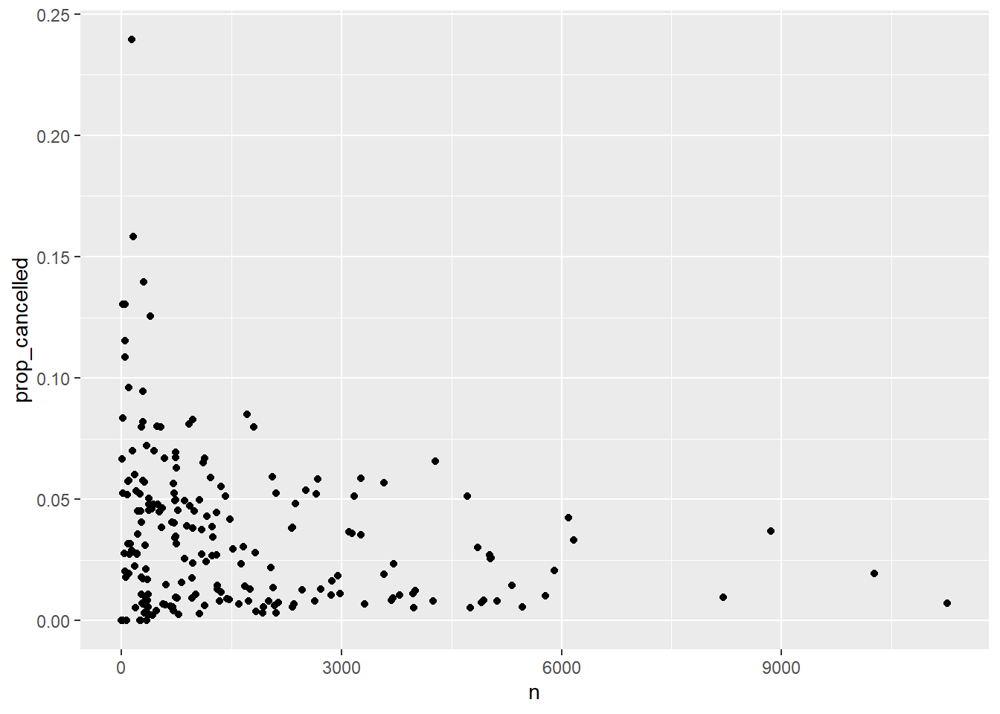
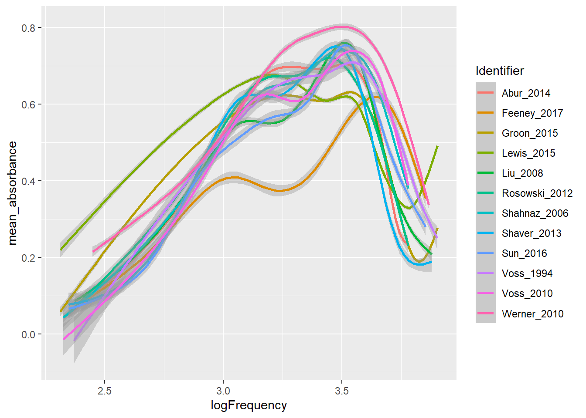

library(tidyverse)
library(mdsr)
library(dbplyr)
library(DBI)SQL: Exercises
You can download this .qmd file from here. Just hit the Download Raw File button.
The code in 15_SQL.qmd walked us through many of the examples in MDSR Chapter 15; now, we present a set of practice exercises in converting from the tidyverse to SQL.
# connect to the database which lives on a remote server maintained by
# St. Olaf's IT department
my_password <- readLines("~/264_fall_2025/DS2_preview_work/olaf_db_password.txt")
library(RMariaDB)
con <- dbConnect(
MariaDB(), host = "mdb.stolaf.edu",
user = "ruser", password = my_password,
dbname = "flight_data"
)On Your Own - Extended Example from MDSR
Refer to Section 15.5 in MDSR, where they attempt to replicate some of FiveThirtyEight’s analyses. The MDSR authors provide a mix of SQL and R code to perform their analyses, but the code will not work if you simply cut-and-paste as-is into R. Your task is to convert the book code into something that actually runs, and then apply it to data from 2024. Very little of the code needs to be adjusted; it mostly needs to be repackaged.
Hints:
- use
dbGetQuery() - note that what they call
carrieris just calledReporting_Airlinein theflightdatatable; you don’t have to merge in acarriertable, although it’s unfortunate that theReporting_Airlinecodes are a bit cryptic
- Below Figure 15.1, the MDSR authors first describe how to plot slowest and fastest airports. Instead of using target time, which has a complex definition, we will use arrival time, which oversimplifies the situation but gets us in the ballpark. Duplicate the equivalent of the table below for 2024 using the code in MDSR:
# A tibble: 30 × 3
dest avgDepartDelay avgArrivalDelay
<chr> <dbl> <dbl>
1 ORD 14.3 13.1
2 MDW 12.8 7.40
3 DEN 11.3 7.60
4 IAD 11.3 7.45
5 HOU 11.3 8.07
6 DFW 10.7 9.00
7 BWI 10.2 6.04
8 BNA 9.47 8.94
9 EWR 8.70 9.61
10 IAH 8.41 6.75
# 20 more rows- Following the table above, the MDSR authors mimic one more FiveThirtyEight table which ranks carriers by time added vs. typical and time added vs. target. In this case, we will find average arrival delay after controlling for the routes flown. Again, duplicate the equivalent of the table below for 2024 using the code in MDSR:
# A tibble: 14 × 5
carrier carrier_name numRoutes numFlights wAvgDelay
<chr> <chr> <int> <dbl> <dbl>
1 VX Virgin America 72 57510 -2.69
2 FL AirTran Airways Corporation 170 79495 -1.55
3 AS Alaska Airlines Inc. 242 160257 -1.44
4 US US Airways Inc. 378 414665 -1.31
5 DL Delta Air Lines Inc. 900 800375 -1.01
6 UA United Air Lines Inc. 621 493528 -0.982
7 MQ Envoy Air 442 392701 -0.455
8 AA American Airlines Inc. 390 537697 -0.0340
9 HA Hawaiian Airlines Inc. 56 74732 0.272
10 OO SkyWest Airlines Inc. 1250 613030 0.358
11 B6 JetBlue Airways 316 249693 0.767
12 EV ExpressJet Airlines Inc. 1534 686021 0.845
13 WN Southwest Airlines Co. 1284 1174633 1.13
14 F9 Frontier Airlines Inc. 326 85474 2.29 On Your Own - Adapting 164 Code
These problems are based on class exercises from SDS 164, so you’ve already solved them in R! Now we’re going to try to duplicate those solutions in SQL (but with 2023 data instead of 2013).
# Read in 2013 NYC flights data
library(nycflights13)
flights_nyc13 <- nycflights13::flights
planes_nyc13 <- nycflights13::planes- Summarize carriers flying to MSP by number of flights and proportion that are cancelled (assuming that a missing arrival time indicates a cancelled flight). [This was #4 in 17_longer_pipelines.Rmd.]
# Original solution from SDS 164
flights_nyc13 |>
mutate(carrier = fct_collapse(carrier, "Delta +" = c("DL", "9E"),
"American +"= c("AA", "MQ"),
"United +" = c("EV", "OO", "UA"))) |>
filter(dest == "MSP") |>
group_by(origin, carrier) |>
summarize(n_flights = n(),
num_cancelled = sum(is.na(arr_time)),
prop_cancelled = mean(is.na(arr_time)))# A tibble: 5 × 5
# Groups: origin [3]
origin carrier n_flights num_cancelled prop_cancelled
<chr> <fct> <int> <int> <dbl>
1 EWR Delta + 598 10 0.0167
2 EWR United + 1779 105 0.0590
3 JFK Delta + 1095 41 0.0374
4 LGA Delta + 2420 25 0.0103
5 LGA American + 1293 62 0.0480First duplicate the output above, then check trends in 2023 across all origins. Here are a few hints:
- use flightdata instead of flights_nyc13
- remember that flights_nyc13 only contained 2013 and 3 NYC origin airports (EWR, JFK, LGA)
- is.na can be replaced with CASE WHEN ArrTime IS NULL THEN 1 ELSE 0 END or with CASE WHEN cancelled = 1 THEN 1 ELSE 0 END
- CASE WHEN can also be used replace fct_collapse
- Plot number of flights vs. proportion cancelled for every origin-destination pair (assuming that a missing arrival time indicates a cancelled flight). [This was #7 in 17_longer_pipelines.Rmd.]
# Original solution from SDS 164
flights_nyc13 |>
group_by(origin, dest) |>
summarize(n = n(),
prop_cancelled = mean(is.na(arr_time))) |>
filter(prop_cancelled < 1) |>
ggplot(aes(n, prop_cancelled)) +
geom_point()
First duplicate the plot above for 2023 data, then check trends across all origins. Do all of the data wrangling in SQL. Here are a few hints:
- use flightdata instead of flights_nyc13
- remember that flights_nyc13 only contained 2013 and 3 NYC origin airports (EWR, JFK, LGA)
- use an
sqlchunk and anrchunk - include
connection =andoutput.var =in your sql chunk header (this doesn’t seem to work with dbGetQuery()…)
- Produce a table of weighted plane age by carrier, where weights are based on number of flights per plane. [This was #6 in 26_more_joins.Rmd.]
# Original solution from SDS 164
flights_nyc13 |>
left_join(planes_nyc13, join_by(tailnum)) |>
mutate(plane_age = 2013 - year.y) |>
group_by(carrier) |>
summarize(unique_planes = n_distinct(tailnum),
mean_weighted_age = mean(plane_age, na.rm =TRUE),
sd_weighted_age = sd(plane_age, na.rm =TRUE)) |>
arrange(mean_weighted_age)# A tibble: 16 × 4
carrier unique_planes mean_weighted_age sd_weighted_age
<chr> <int> <dbl> <dbl>
1 HA 14 1.55 1.14
2 AS 84 3.34 3.07
3 VX 53 4.47 2.14
4 F9 26 4.88 3.67
5 B6 193 6.69 3.29
6 OO 28 6.84 2.41
7 9E 204 7.10 2.67
8 US 290 9.10 4.88
9 WN 583 9.15 4.63
10 YV 58 9.31 1.93
11 EV 316 11.3 2.29
12 FL 129 11.4 2.16
13 UA 621 13.2 5.83
14 DL 629 16.4 5.49
15 AA 601 25.9 5.42
16 MQ 238 35.3 3.13First duplicate the output above for 2023, then check trends across all origins. Do all of the data wrangling in SQL. Here are a few hints:
- use flightdata instead of flights_nyc13
- remember that flights_nyc13 only contained 2013 and 3 NYC origin airports (EWR, JFK, LGA)
- you’ll have to merge the flights dataset with the planes dataset
- you can use DISTINCT inside a COUNT()
- investigate SQL clauses for calculating a standard deviation
- you cannot use a derived variable inside a summary clause in SELECT
For bonus points, also merge the airlines dataset and include the name of each carrier and not just the abbreviation!
On Your Own - Noninvasive Auditory Diagnostic Tools
You will use SQL to query the Wideband Acoustic Immittance (WAI) Database hosted by Smith College. WAI measurements are being developed as noninvasive auditory diagnostic tools for people of all ages, and the WAI Database hosts WAI ear measurements that have been published in peer-review articles. The goal of the database is to “enable auditory researchers to share WAI measurements and combine analyses over multiple datasets.”
You have two primary goals:
duplicate Figure 1 from a 2019 manuscript by Susan Voss. You will need to query the WAI Database to build a dataset which you can pipe into
ggplot()to recreate Figure 1 as closely as possible.Find a study where subjects of different sex, race, ethnicity, or age groups were enrolled, and produce plots of frequency vs. mean absorption by group.
You should be using JOINs in both (1) and (2).
Hints:
- Parse the caption from Figure 1 carefully to determine how mean absorbances are calculated: “Mean absorbances for the 12 studies within the WAI database as of July 1, 2019. Noted in the legend are the peer-reviewed publications associated with the datasets, the number of individual ears, and the equipment used in the study. When multiple measurements were made on the same ear, the average from those measurements was used in the calculation across subjects for a given study. Some subjects have measurements on both a right and a left ear, and some subjects have measurements from only one ear; this figure includes every ear in the database and does not control for the effect of number of ears from each subject.”
- filter for only the 12 studies shown in Figure 1 (and also for frequencies shown in Figure 1)
- study the patterns of frequencies. It seems that most researchers used the same set of frequencies for each subject, ear, and session.
- note the scale of the x-axis
- the key labels contain AuthorsShortList, Year, and Instrument, in addition to the number of unique ears (I think Werner’s N may be incorrect?)
Starter Code for Part 1:
library(tidyverse)
library(mdsr)
library(dbplyr)
library(DBI)
library(RMariaDB)
con <- dbConnect(
MariaDB(), host = "scidb.smith.edu",
user = "waiuser", password = "smith_waiDB",
dbname = "wai"
)
Measurements <- tbl(con, "Measurements")
PI_Info <- tbl(con, "PI_Info")
Subjects <- tbl(con, "Subjects")
# collect(Measurements)Run the following queries in a chunk with {sql, connection = con}:
- SHOW TABLES;
- DESCRIBE Measurements;
- SELECT * FROM PI_Info LIMIT 0,1;
Let’s start to explore what this data looks like, starting with the Measurements table for one study:
Using Abur_2014 we can explore counts per subject/ear:
SELECT Identifier, SubjectNumber, Session, Ear, Frequency
FROM Measurements
WHERE Identifier = 'Abur_2014' AND Frequency < 8000 AND Frequency > 200
AND SubjectNumber = 1;| Identifier | SubjectNumber | Session | Ear | Frequency |
|---|---|---|---|---|
| Abur_2014 | 1 | 1 | Left | 210.938 |
| Abur_2014 | 1 | 1 | Left | 234.375 |
| Abur_2014 | 1 | 1 | Left | 257.812 |
| Abur_2014 | 1 | 1 | Left | 281.250 |
| Abur_2014 | 1 | 1 | Left | 304.688 |
| Abur_2014 | 1 | 1 | Left | 328.125 |
| Abur_2014 | 1 | 1 | Left | 351.562 |
| Abur_2014 | 1 | 1 | Left | 375.000 |
| Abur_2014 | 1 | 1 | Left | 398.438 |
| Abur_2014 | 1 | 1 | Left | 421.875 |
For Subject 1, there are 248 frequencies per session per ear (in the desired range), the frequencies are always the same, and 7 total sessions. Thus, it appears any averaging must be across sessions. We’ll confirm some of these values below:
SELECT SubjectNumber, Session, Ear,
SUM(1) AS N,
AVG(Absorbance) AS mean_absorbance
FROM Measurements
WHERE Identifier = 'Abur_2014' AND Frequency < 8000 AND Frequency > 200
AND SubjectNumber IN (1, 3)
GROUP BY SubjectNumber, Session, Ear;| SubjectNumber | Session | Ear | N | mean_absorbance |
|---|---|---|---|---|
| 1 | 1 | Left | 248 | 0.5257449 |
| 1 | 1 | Right | 248 | 0.5743758 |
| 1 | 2 | Left | 248 | 0.5323120 |
| 1 | 2 | Right | 248 | 0.6114478 |
| 1 | 3 | Left | 248 | 0.5418992 |
| 1 | 3 | Right | 248 | 0.6145605 |
| 1 | 4 | Left | 248 | 0.4567001 |
| 1 | 4 | Right | 248 | 0.5136930 |
| 1 | 5 | Left | 248 | 0.5258554 |
| 1 | 5 | Right | 248 | 0.5737305 |
For Subjects 1 and 3, there are 248 frequencies per session per ear.
# Note that variables can be used in WHERE but not SELECT
SELECT SubjectNumber, Ear, Frequency,
SUM(1) AS N,
AVG(Absorbance) AS mean_absorbance
FROM Measurements
WHERE Identifier = 'Abur_2014' AND Frequency = 1500
GROUP BY SubjectNumber, Ear, Frequency;| SubjectNumber | Ear | Frequency | N | mean_absorbance |
|---|---|---|---|---|
| 1 | Left | 1500 | 7 | 0.5646144 |
| 1 | Right | 1500 | 7 | 0.6530876 |
| 3 | Left | 1500 | 7 | 0.5346824 |
| 3 | Right | 1500 | 7 | 0.6708667 |
| 4 | Left | 1500 | 7 | 0.8018977 |
| 4 | Right | 1500 | 7 | 0.7468426 |
| 6 | Left | 1500 | 8 | 0.6689936 |
| 6 | Right | 1500 | 8 | 0.5893204 |
| 7 | Left | 1500 | 5 | 0.5188966 |
| 7 | Right | 1500 | 5 | 0.5936866 |
There are a variable number of sessions per subject (4-8).
SELECT Frequency,
SUM(1) AS N,
AVG(Absorbance) AS mean_absorbance
FROM Measurements
WHERE Identifier = 'Abur_2014' AND Frequency < 8000 AND Frequency > 200
GROUP BY Frequency;| Frequency | N | mean_absorbance |
|---|---|---|
| 210.938 | 86 | 0.0784746 |
| 234.375 | 86 | 0.0826420 |
| 257.812 | 86 | 0.0948482 |
| 281.250 | 86 | 0.1031472 |
| 304.688 | 86 | 0.1137576 |
| 328.125 | 86 | 0.1221205 |
| 351.562 | 86 | 0.1334329 |
| 375.000 | 86 | 0.1447725 |
| 398.438 | 86 | 0.1563874 |
| 421.875 | 86 | 0.1806973 |
And it seems to always be the same 248 frequencies!
So let’s create a data base with mean absorbance for each combination of study, subject, ear, and frequency:
SELECT Identifier, SubjectNumber, Ear, Frequency,
SUM(1) AS N,
AVG(Absorbance) AS mean_absorbance
FROM Measurements
WHERE Identifier IN ('Abur_2014', 'Feeney_2017', 'Groon_2015',
'Lewis_2015', 'Liu_2008', 'Rosowski_2012', 'Shahnaz_2006',
'Shaver_2013', 'Sun_2016', 'Voss_1994', 'Voss_2010',
'Werner_2010') AND Frequency < 8000 AND Frequency > 200
GROUP BY Identifier, SubjectNumber, Ear, Frequency;# 155103 x 6 data set
# head(temp, 300)This creates Figure 1 without the informative legend:
temp |>
mutate(logFrequency = log10(Frequency)) |>
ggplot(aes(x = logFrequency, y = mean_absorbance, color = Identifier)) +
geom_smooth() 
Now use JOIN to create temp2 which will include the information you need to produce the informative labels: author (short list), year published, sample size, and instrument used for measurements. Then produce an improved version of the plot above using temp (for smooth curves) and temp2 (for labels).